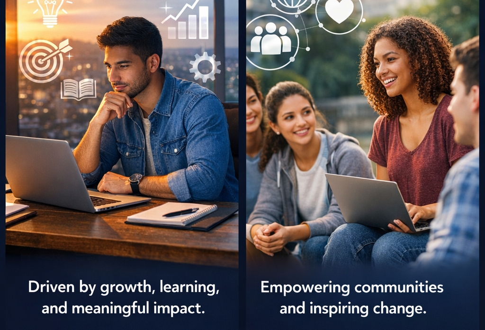
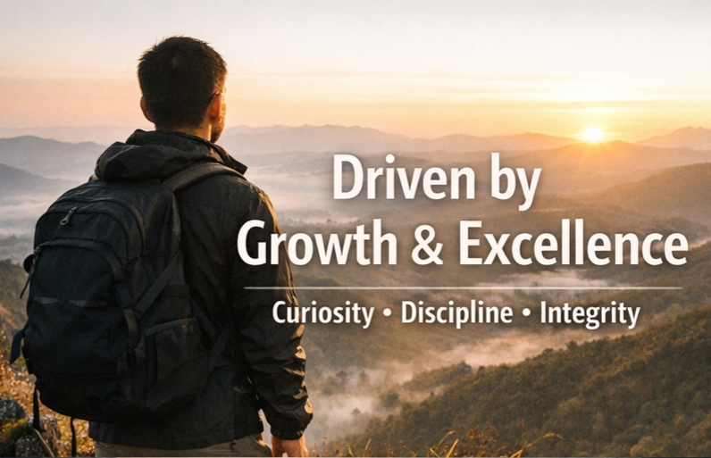

My personal space to share who I am and how to reach me.


DOB: 12/12/1994 | Location: Garissa, Kenya
I am a purpose-driven individual with a strong passion for growth, learning, and meaningful impact. My journey has been shaped by curiosity, discipline, and a constant desire to improve both myself and the environments I am part of. I approach every opportunity with an open mind and a commitment to excellence, believing that consistency and integrity are the foundations of lasting success. Whether working independently or collaboratively, I value clarity, responsibility, and results that speak for themselves.
I am deeply interested in technology, digital solutions, and how innovation can be used to solve real-world challenges. I believe technology is most powerful when it is practical, accessible, and people-centered. This belief drives my interest in digital skills, systems, and tools that improve efficiency, communication, and empowerment. I continuously seek to expand my knowledge and adapt to new trends, understanding that learning is not a one-time event but a lifelong process.
Beyond technical interests, I am motivated by community development and positive social impact. I value initiatives that empower individuals, especially youth, by equipping them with relevant skills and confidence to navigate the modern world. I believe that sustainable development starts with knowledge sharing, mentorship, and creating opportunities that allow people to unlock their potential. Contributing to such growth gives my work deeper meaning and purpose.
I describe myself as focused, reliable, and goal-oriented. I take pride in planning carefully, paying attention to detail, and following through on commitments. Challenges motivate me rather than discourage me, as I see them as opportunities to learn and refine my abilities. I am comfortable working in dynamic environments and remain calm under pressure, always striving to deliver quality outcomes within set timelines.
Ultimately, my goal is to continue building skills, experience, and impact in ways that align with my values and long-term vision. I aim to grow professionally while remaining grounded, ethical, and service-oriented. By combining knowledge, creativity, and dedication, I seek to contribute meaningfully to projects and initiatives that create lasting value for individuals, organizations, and communities.
I hold a Bachelor of Science in Information Science, which has equipped me with strong competencies in research, proposal writing, and data management. I also earned a Diploma in Information Technology, providing practical knowledge in IT systems, software, and networking. My professional certifications include Cisco Certified Network Associate (CCNA) from AFRALTI, Microsoft Azure Cloud Computing certification, Project Management from Coursera, Graphic Design from Webb’s Institute, and Leadership Skills training through the Young African Leaders Initiative (YALI) Network.
I have hands-on experience in IT and networking, including network setup, troubleshooting, cloud deployment, computer repair, and help desk support. My professional skills also extend to research and proposal writing, data analysis, and graphic design for digital and community-based projects.
I serve as the Chairperson of the Garissa Digital Empowerment Hub (CBO), where I lead community digital initiatives, manage projects, and coordinate team activities. Through this role and my involvement in the YALI Network, I have developed strong leadership, organizational, and project management skills focused on community empowerment.
I am a licensed Class BCE driver with over ten years of private long-distance driving experience. I am also certified in defensive driving and first aid through St John’s Ambulance, demonstrating a strong commitment to safety, responsibility, and emergency preparedness.